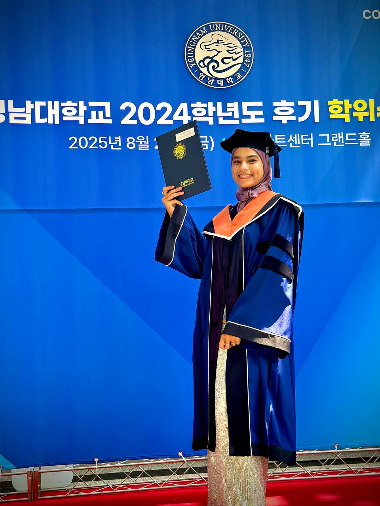

Professional Biography

I am Sitorabonu Yuldosheva, a graduate student in the Master of Arts in Education and Innovation (MA EDIN) program at Webster University. My academic journey has been driven by a deep commitment to understanding how creativity, technology, and thoughtful instructional design can transform learning experiences for diverse student populations. Throughout the MA EDIN program, I have developed competencies in curriculum development, educational technology integration, design thinking, and collaborative leadership—all grounded in evidence-based practice and a genuine passion for student-centered learning.
My professional growth has been shaped by sustained engagement with the theories and practices that define innovative education. From designing interdisciplinary lesson plans rooted in the Stanford d.school framework to creating technology-enhanced blended learning modules, I have consistently sought to bridge the gap between educational research and classroom application. The MA EDIN program has provided me with the theoretical foundations and practical tools to approach education not as a static profession but as a dynamic, evolving practice that demands creativity, critical thinking, and a commitment to continuous improvement.
Teaching Philosophy
I believe that every learner arrives with unique strengths, experiences, and creative potential. The role of an educator is not simply to transmit knowledge but to design learning environments that invite curiosity, support risk-taking, and cultivate the kind of thinking that prepares learners for an uncertain and rapidly changing world. My teaching philosophy is grounded in student-centered pedagogy, where learners are active participants in constructing their own understanding rather than passive recipients of information.
Technology, when used with intention and purpose, serves as a powerful catalyst for transformative learning. I view technology integration not as an end in itself but as a means of expanding what is possible in education—enabling collaboration across boundaries, personalizing learning pathways, and providing authentic contexts for problem-solving. Drawing on the SAMR framework (Puentedura, 2013), I strive to move beyond simple substitution toward activities where technology redefines what students can create, investigate, and achieve.
At the heart of my practice is a commitment to reflective teaching. I draw on the work of Schön (1983) and Kolb (2015) to continuously examine my instructional decisions, seek feedback, and adapt my approach in response to the evolving needs of my learners. I am convinced that the best educators are themselves lifelong learners—professionals who model the intellectual curiosity and growth mindset they hope to cultivate in their students.
Professional Strengths
Instructional Design
Design thinking, backward design, and learner-centered curriculum development
Technology Integration
SAMR framework, blended learning, digital tools for engagement
Creativity & Innovation
Creative problem-solving, interdisciplinary approaches, design thinking pedagogy
Collaborative Leadership
Team facilitation, learning communities, shared decision-making
Differentiated Instruction
UDL principles, diverse learner support, inclusive pedagogy
Reflective Practice
Evidence-based reflection, continuous improvement, scholarly inquiry
Leadership Statement
"I lead by creating conditions where others can contribute their best thinking. Leadership in education is not about directing from the front but about facilitating from within—building trust, modeling vulnerability, and empowering every team member to bring their expertise to the shared work of improving student learning."
Throughout the MA EDIN program, I have developed a leadership identity rooted in collaboration, empathy, and design thinking. I believe that the most effective educational leaders are those who listen deeply, ask generative questions, and create spaces where diverse perspectives are valued. My experience with team-based projects—including the Smart Learners WebQuest and collaborative curriculum design work—has reinforced my conviction that innovation emerges from collective inquiry, not individual expertise alone.
As I move forward in my career, I am committed to leading professional learning communities that embrace experimentation, celebrate creative risk-taking, and use evidence to inform practice. I aspire to be the kind of leader who helps colleagues see technology not as a burden but as an opportunity, and who models the reflective, growth-oriented mindset that the MA EDIN program has cultivated in me.
Future Goals
Looking ahead, I envision a career that sits at the intersection of instructional design, educational technology, and leadership. My immediate goals include applying the competencies I have developed in the MA EDIN program to roles where I can design innovative learning experiences, mentor fellow educators, and contribute to curriculum development that is responsive to the needs of 21st-century learners.
I am particularly interested in exploring how emerging technologies—including artificial intelligence and adaptive learning platforms—can be leveraged ethically and effectively to personalize education and support diverse learners. I also plan to continue my own professional development through engagement with organizations such as ISTE and participation in professional learning networks that keep me connected to the latest research and best practices in educational innovation.
Ultimately, my goal is to contribute to building educational systems and communities where creativity is valued, technology is used with purpose, and every learner has the opportunity to thrive. The MA EDIN program has given me the foundation to pursue this vision, and I am eager to carry this work forward with passion, purpose, and a commitment to lifelong learning.